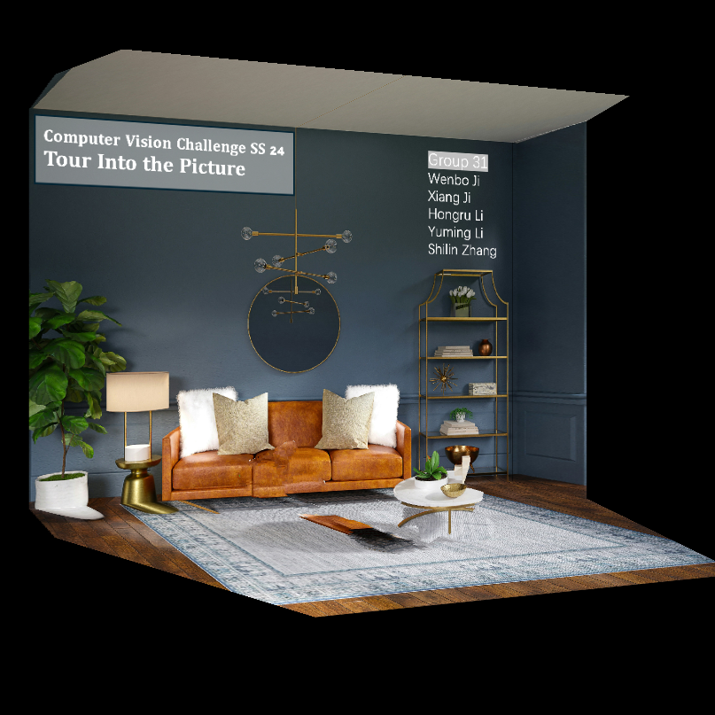
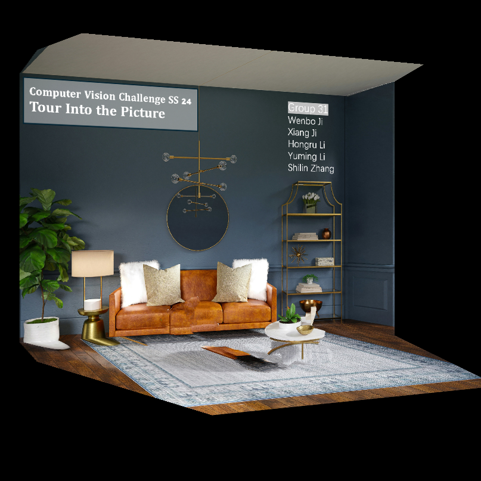
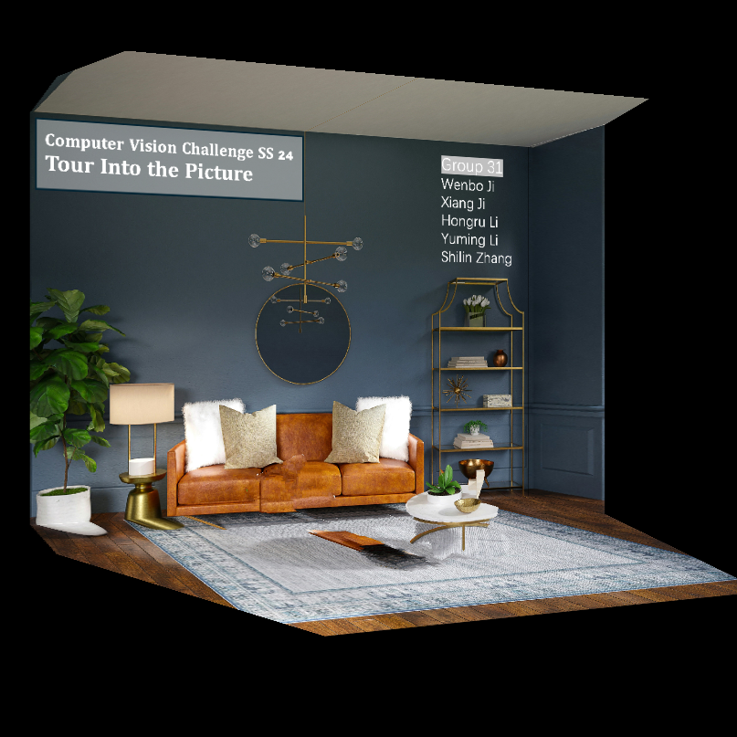
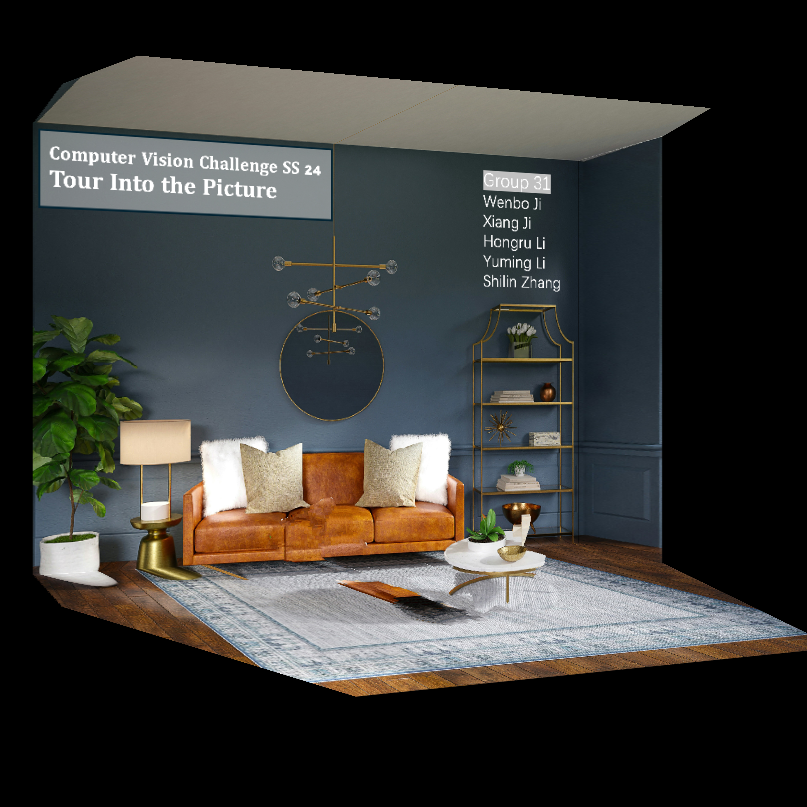

We aim to build autonomous algorithms that can infer two important structures for compositional scene understanding and editing from a single image: the regular, program-like texture or patterns in 2D planes and the 3D posing of these planes in the scene. As a motivating example, when observing a single image of a corridor like the one in Fig. 1, we humans can effortlessly infer the camera pose, partition the image into five planes—including left and right walls, floor, ceiling, and a far plane—and recognize the repeated pattern on each of these planes. Such a holistic and structural representation allows us to flexibly edit the image, for instance by inpainting missing regions, moving the camera, and extrapolating the corridor to make it infinite.
Taking a photograph and being able to move the camera around is a compelling way to bring photos to life. It requires understanding the 3D structure of the scene, reasoning about occlusions and what might be behind them, and rendering high-quality, spatially consistent new views in real-time.